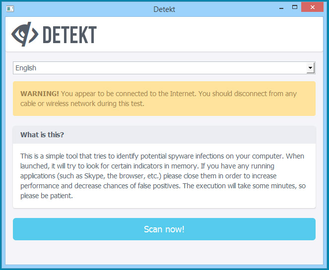
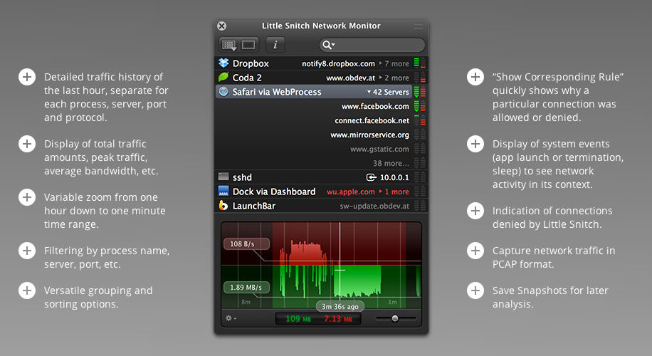
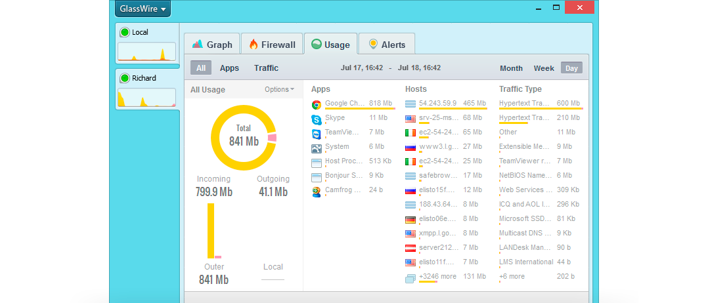

Backdoor Detection
The tools in this section help you to determine if any backdoors are installed on your system. The personal firewalls and connection monitoring tools are used to determine if any program on your system communicates with a remote system that is suspicious.
Detekt (Windows)
Detekt is a free tool that scans your Windows computer for traces of FinFisher and Hacking Team RCS, commercial surveillance spyware that has been identified to be also used to target and monitor human rights defenders and journalists around the world.
Screenshots

Above: Interface (source: resistsurveillance.org)
Download
Available on the GitHub
Price: Free
More Information
For more information visit https://resistsurveillance.org/
LittleSnitch (Mac OSX)
Little Snitch protects your privacy! As soon as you’re connected to the Internet, applications can potentially send whatever information they want to wherever they want. Sometimes they do this for good reason, on your explicit request. But often they don’t. Little Snitch intercepts these unwanted connection attempts, and lets you decide how to proceed.
Screenshots
 Above: Reviewing all outgoing connections (source: obdev.at)
Download
Available on the developers website
Price: EUR 29.95
More Information
For more information visit http://www.obdev.at/products/littlesnitch/index.html
GlassWire (Windows)
GlassWire is a free network monitor & security tool with a built in firewall.
GlassWire’s network monitor visualizes your current and past network activity by traffic type, application, geographic location, all on a beautiful and easy to understand graph. Go back in time up to 30 days and see what your computer or server was doing in the past. Click the graph to see details of what app or network event caused a spike in network activity.
GlassWire reveals hosts that are known threats, unexpected network system file changes, unusual application changes, ARP spoofing, DNS changes, and alerts you to the problem so you can take action. GlassWire can also remotely monitor and help protect servers or other computers far away. Install GlassWire on your server or remote PC and look out for unexpected threats or problems. If you see unexpected activity you can block it with GlassWire's free firewall.
GlassWire's free firewall reveals all your network activity so you can easily see what your computer is doing in the background. GlassWire's firewall shows you what current and past servers your computer is communicating with so you can see potential threats and block them if necessary.
Screenshots
 Above: Reviewing all outgoing connections (source: glasswire.com)
Download
Available on the developers website
Price: Free
More Information
For more information visit glasswire.com